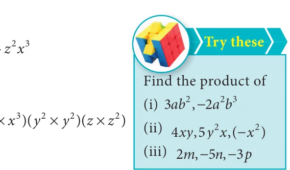
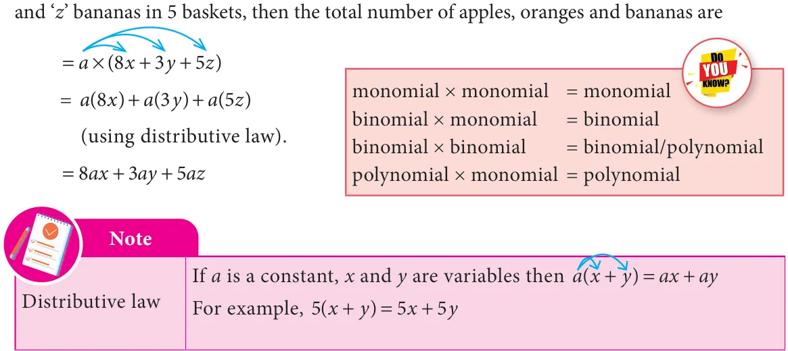
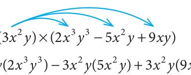
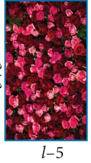
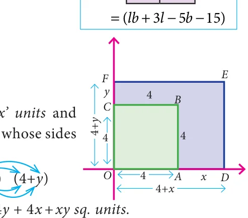
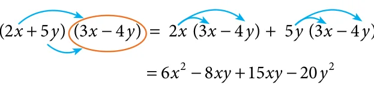

<!DOCTYPE html>
<html lang="en">
<head>
<meta charset="UTF-8">
<meta name="viewport" content="width=device-width,initial-scale=1">
<title>3.2 Multiplication of Algebraic Expressions — Algebra</title>
<meta name="description" content="Class 8 Mathematics · Algebra · 3.2 Multiplication of Algebraic Expressions">
<link rel="icon" href="data:image/svg+xml,<svg xmlns='http://www.w3.org/2000/svg' viewBox='0 0 100 100'><text y='.9em' font-size='90'>📘</text></svg>">
<link rel="stylesheet" href="../../../assets/book.css">
<link rel="stylesheet" href="https://cdn.jsdelivr.net/npm/katex@0.16.11/dist/katex.min.css" crossorigin="anonymous">
</head>
<body>
<header class="topbar">
<div class="topbar-in">
  <div class="crumb">
    <span class="c1"><a href="../../../index.html">Library</a> · <a href="../../index.html">Class 8 Mathematics</a></span>
    <span class="c2">Algebra · 3.2 Multiplication of Algebraic Expressions</span>
  </div>
  <a class="tb-btn" data-nav="prev" href="../../03-algebra/02-introduction-3.1/index.html" title="3.1 Introduction">←</a>
  <details class="drawer"><summary class="tb-btn" title="Sections in this chapter">☰</summary>
<div class="drawer-panel"><div class="dh">Algebra</div><a href="../01-chapter-opener/index.html">Chapter opener</a><a href="../02-introduction-3.1/index.html">3.1 Introduction</a><a href="../03-multiplication-of-algebraic-expressions-3.2/index.html" aria-current="page">3.2 Multiplication of Algebraic Expressions</a><a href="../04-exercise-3.1/index.html">Exercise 3.1</a><a href="../05-division-of-algebraic-expressions-3.3/index.html">3.3 Division of Algebraic Expressions</a><a href="../06-avoid-some-common-errors-3.4/index.html">3.4 Avoid Some Common Errors</a><a href="../07-exercise-3.2/index.html">Exercise 3.2</a><a href="../08-identities-3.5/index.html">3.5 Identities</a><a href="../09-cubic-identities-3.6/index.html">3.6 Cubic Identities</a><a href="../10-exercise-3.3/index.html">Exercise 3.3</a><a href="../11-factorisation-3.7/index.html">3.7 Factorisation</a><a href="../12-exercise-3.4/index.html">Exercise 3.4</a><a href="../13-exercise-3.5/index.html">Exercise 3.5</a><a href="../14-linear-equation-in-one-variable-3.8/index.html">3.8 Linear Equation in One Variable</a><a href="../15-exercise-3.6/index.html">Exercise 3.6</a><a href="../16-word-problems-that-involve-linear-equations-3.8.5/index.html">3.8.5 Word problems that involve linear equations</a><a href="../17-exercise-3.7/index.html">Exercise 3.7</a><a href="../18-graph-3.9/index.html">3.9 Graph</a><a href="../19-exercise-3.8/index.html">Exercise 3.8</a><a href="../20-to-obtain-a-straight-line-3.9.7/index.html">3.9.7 To obtain a straight line</a><a href="../21-linear-graph-3.10/index.html">3.10 Linear Graph</a><a href="../22-exercise-3.9/index.html">Exercise 3.9</a><a href="../23-exercise-3.10/index.html">Exercise 3.10</a><a href="../24-summary/index.html">SUMMARY</a></div></details>
  <a class="tb-btn" data-nav="next" href="../../03-algebra/04-exercise-3.1/index.html" title="Exercise 3.1">→</a>
  <button class="tb-btn" data-theme-toggle title="Toggle light / dark" aria-label="Toggle light or dark theme">◐</button>
</div>
<div class="progress"><span style="width:26.9%"></span></div>
</header>
<main class="wrap">
<div class="sec-head">
  <p class="eyebrow"><a href="../index.html">Chapter 3 · Algebra</a></p>
  <h1>3.2 Multiplication of Algebraic Expressions</h1>
  <p class="sec-meta">Textbook pages 4–8 · 17 figures</p>
</div>
<article class="prose">
<p>While doing the product of algebraic expressions, we should follow the steps given below.</p>
<p>Step 1: Multiply the signs of the terms. That is, the product of two like signs are positive and the product of two unlike signs are negative.</p>
<p>\(\frac{Like\) signs}{Unlike signs} \(((++)) \times \times ((+ - = -\) )) \(= +\) (( \(- \times - \times\) )) \(((+ - = +)) = -\)</p>
<figure class="fig side-fig"></figure>
<p>Step 2: Multiply the corresponding co-efficients of the terms. Step 3: Multiply the variable factors by using laws of exponents.</p>
<p>If ‘x’ is a variable and m, n are positive integers then,</p>
<p>\(x \times x = x\)</p>
<p>m n m+n</p>
<p>For example, \(\times = =\)</p>
<figure class="fig table-fig wide"></figure>
<h3 id="s-3-2-1-multiplication-of-two-or-more-monomials">3.2.1 Multiplication of two or more monomials</h3>
<p>Consider that, Geetha buys 3 pens each @ `5, how much she has to pay to the shopkeeper? Geetha has to pay to the shopkeeper \(= 3 \times\) `5</p>
<figure class="fig side-fig"></figure>
<div class="mathblock"><p>= `15</p></div>
<p>If there are ‘x’ pens and the cost of each pen is ` ‘y’,</p>
<p>then the cost of (3x ) pens bought by Geetha @ ` 5y</p>
<figure class="fig side-fig"></figure>
<div class="mathblock"><p>\(= (3x\) ) \(\times 5y\)</p></div>
<div class="mathblock"><p>\(= (3 \times 5)(x \times\) y) = ` \(15x^{2}y\)</p></div>
<h4 class="callout-h" id="s-example-3-1">Example 3.1</h4>
<figure class="fig side-fig"></figure>
<p>If the length and breadth of a rectangular painting are</p>
<p>4xy and 3x y . Find its area.</p>
<h4 class="callout-h" id="s-solution">Solution:</h4>
<p>Area of the rectangular painting, A= (l \(\times\) b) sq.units</p>
<div class="mathblock"><p>\(= (4xy\) ) \(\times (3x\) y)</p></div>
<div class="mathblock"><p>\(= (4 \times 3)(x \times x\) )(y \(\times\) y)</p></div>
<aside class="sidenote"><p>xy</p></aside>
<div class="mathblock"><p>\(A =12\) sq.units</p></div>
<figure class="fig"></figure>
<h4 class="callout-h" id="s-example-3-2">Example 3.2</h4>
<p>Find the product of 2x y , 3y z and -</p>
<h4 class="callout-h" id="s-solution">Solution:</h4>
<div class="mathblock"><p>We have, (2x y ) \(\times (3y\) z) \(\times\) ( \(- z x\) )</p></div>
<div class="mathblock"><p>\(= (+) \times (+) \times\) ( \(- )(2 \times 3 \times 1)( \times\) )( \(\times\) )( \(\times\) )</p><p>\(= - 6x y z\)</p></div>
<h3 id="s-3-2-2-multiplication-of-a-polynomial-by-a-monomial">3.2.2 Multiplication of a polynomial by a monomial</h3>
<p>If there are ‘a’ shops and each shop has ‘x’ apples in 8 baskets and ‘y’ oranges in 3 baskets</p>
<figure class="fig table-fig wide"></figure>
<h4 class="callout-h" id="s-example-3-3">Example 3.3</h4>
<figure class="fig"></figure>
<div class="mathblock"><p>Multiply \(3 +\) xy)</p></div>
<figure class="fig"></figure>
<h4 class="callout-h" id="s-solution">Solution:</h4>
<p>Now, ( ) \(\times\) ( \(- +\) xy) = ( ) - ( )+ ( xy) multiplying each term of the polynomial by the monomial</p>
<div class="mathblock"><p>\(= (3 \times 2)(x \times x\) )(y \(\times y\) ) \(- (3 \times 5)(x \times x\) )(y \(\times y)+ (3 \times 9)(x \times\) x)(y \(\times\) y)</p></div>
<div class="mathblock"><p>\(= 6x y - 15x y + 27x y\)</p></div>
<h4 class="callout-h" id="s-example-3-4">Example 3.4</h4>
<p>Ram deposited ‘x’ number of `2000 notes, ‘y’ number of `500 notes, ‘z’ number of `100 notes in a bank and Velan deposited ‘3xy’ times of amount of what Ram had deposited. How much amount did Velan deposit in the bank?</p>
<h4 class="callout-h" id="s-solution">Solution:</h4>
<figure class="fig side-fig"></figure>
<p>Amount deposited by Ram</p>
<div class="mathblock"><p>= (x \(\times\) `2000 \(+ y \times\) `500 \(+ z \times\) `100) = `(2000x \(+ 500y +100z\) )</p></div>
<p>Amount deposited \(= 3xy\) times \(\times\) Amount deposited by Velan by Ram</p>
<div class="mathblock"><p>=`3xy \(\times (2000x + 500y +100z)\)</p><p>= ( \(\times 2000)( \times \times )+\) ( \(\times\) )( \(\times \times )+\) ( \(\times\) )( \(\times \times\) )</p><p>=`(6000 \(+1500xy +\) xyz)</p></div>
<figure class="fig wide"></figure>
<h3 id="s-3-2-3-multiplication-of-two-binomials">3.2.3 Multiplication of two binomials</h3>
<p>Consider that a rectangular flower bed whose length is decreased by 5 units from the original length and whose breadth is increased by 3 units to the original breadth. What is the area of the rectangular flower bed?</p>
<figure class="fig side-fig"></figure>
<p>Area of the rectangle \(= l \times b\)</p>
<p>Here, area of the rectangular flower bed \(A =\) (l \(- 5) \times\) (b \(+ 3\) ) sq.units How do we multiply this?</p>
<p>Now, let us learn how to multiply two binomials. \(- 5\)</p>
<p>If ( + ) and ( + ) are two binomials, we can find their product as given below,</p>
<figure class="fig table-fig wide"></figure>
<p>So, the above area of the rectangle = ( - ) \(\times\) ( + ) Aliter (By horizontal distributive approach) = ( +</p>
<aside class="sidenote"><p>= (lb +</p></aside>
<p>Let us consider one more example. Consider the given figure , In the square OABC,</p>
<figure class="fig table-fig side-fig"></figure>
<p>\(OA= 4\) units ; \(OC =4\) units The area of the square \(OABC = 4 \times 4\)</p>
<div class="mathblock"><p>\(A = 16\) sq.units</p></div>
<p>If the sides of the square are increased by ‘ ‘y’ units respectively,then we get the rectangle are OD=(4+x) units and OF=(4+y) units.</p>
<p>Now, the area of the rectangle \(ODEF = (4+\)</p>
<p>(by FOIL approach) \(A = 16+ 4\) (all are unlike terms and so, we can’t add)</p>
<p>Example 3.5 Aliter</p>
<p>Multiply \((2x + 5y)\) and \((3x - 4y)\)</p>
<figure class="fig side-fig"></figure>
<h4 class="callout-h" id="s-solution">Solution:</h4>
<p>By horizontal distributive approach,</p>
<figure class="fig"></figure>
<p>( )</p>
<p>\(= -\) xy + xy -</p>
<p>\(= +\) xy \(- y\) (simplify the like terms)</p>
<figure class="fig table-fig wide"></figure>
</article>
<nav class="pager"><a class="" data-nav="prev" href="../../03-algebra/02-introduction-3.1/index.html"><span class="dir">← Previous</span><span class="t">3.1 Introduction</span><span class="ch">Algebra</span></a><a class="nx" data-nav="next" href="../../03-algebra/04-exercise-3.1/index.html"><span class="dir">Next →</span><span class="t">Exercise 3.1</span><span class="ch">Algebra</span></a></nav>
</main><footer class="site">Generated from the source textbook PDFs · text, figures and exercises belong to their respective publishers.</footer><script defer src="https://cdn.jsdelivr.net/npm/katex@0.16.11/dist/katex.min.js" crossorigin="anonymous"></script>
<script defer src="https://cdn.jsdelivr.net/npm/katex@0.16.11/dist/contrib/auto-render.min.js" crossorigin="anonymous"
  onload="renderMathInElement(document.body,{delimiters:[
    {left:'\\(',right:'\\)',display:false},
    {left:'$$',right:'$$',display:true},
    {left:'\\[',right:'\\]',display:true}],throwOnError:false,ignoredTags:['script','noscript','style','textarea','pre','code']})"></script>
<script src="../../../assets/book.js"></script>
<script defer src="../../../../assets/search.js?v=1789782769"></script>
<script defer src="../../../../assets/screenshot.js?v=1789782769"></script>
</body>
</html>
